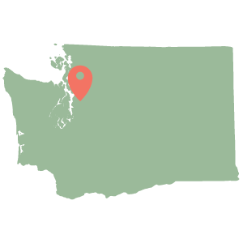

about
resume
education
work
projects
Work Experience
Microsoft
OneDrive Team, Windows Phone
Software Developer Intern

Developed and tested new sharing experience for the OneDrive Windows Phone application. Improved share success rate from 18% to 67% in two weeks
Built a custom contact-selection dropdown control for Invite People page
Developed and tested Recycle Bin page and functionality
Redmond, WA, USA
Summer 2014
Folyo
www.folyo.co
CTO & Co-Founder

Designed & developed the web application.
Researched competitors and new applicable technologies
Hired development team and managed development schedule.
Experienced the LLC formation process.
East Lansing, MI, USA
October 2013 - June 2014
Spartan Innovations
Michigan State University
Web & Mobile Development Intern

Designed & developed web sites and Android applications
Worked closely with clients and co-workers to ensure the appropriate and desired branding/image was created
Advised startups on technological challenges
East Lansing, MI, USA
August 2013 - May 2014
Microsoft
Windows Azure Team, Fabric Controller
Program Manager Intern
Designed, developed, and tested a user interface for a prototype of a new Azure infrastructure, including implementing a demo walkthrough
Platform had potential to serve as a plugin for real-time diagnostics
Redmond, WA, USA
Summer 2013
Michigan State University
College of Engineering
Teaching Assistant for CSE 231, Introduction to Programming I (Python)
Facilitate learning in the laboratory environment (around 22 students)
Inspect and score weekly programing assignments
Develop presentations to review programming skills and priciples for students
East Lansing, MI, USA
Fall 2012 - Present
Michigan State University
College of Engineering
Research Assistant
Analyzed gesture research and human-robot interaction studies
Designed gesture recognition software using C# and the Kinect
Programmed movement and intention gestures for humanoid robot
East Lansing, MI, USA
Summer 2012